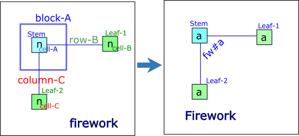
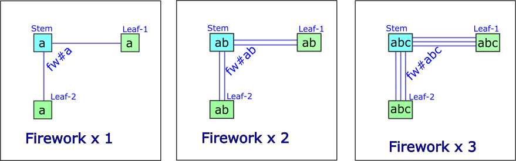
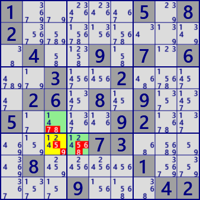
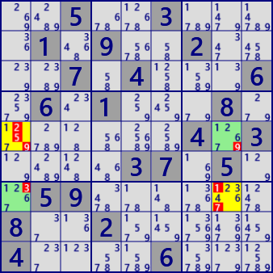
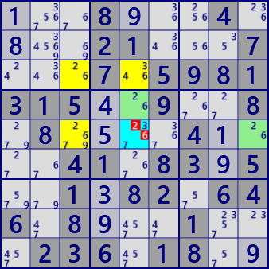
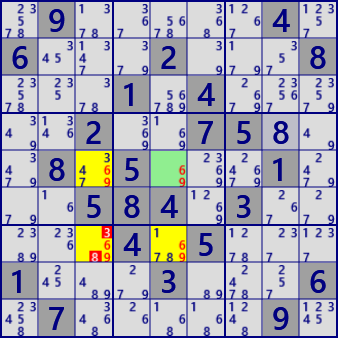

[GNPX v5.1]
Fireworks
Firework is a state of digit arrangement that occurs on the board, and this alone does not confirm or deny Sudoku numbers.
However, by combining multiple fireworks or combining with other digit arrangements, it becomes a Sudoku solving algorithm.
This is the state on the Sudoku board, similar to ALS, Link, etc.
The explanation of the Firework algorithm here is based on the following website.
The New Sudoku Players' Forum
http://forum.enjoysudoku.com/fireworks-t39513.html
Firework definition
Firework is defined as follows:
- Focus on the arrangement of the digit “n” on the board.
- Choose cell A that has the digit “n” as a candidate.
- Let the block of cell A be block-A.
- Set the row House outside block-A and the same as cell A as row-B.
Select cell B for row-B. B is the only cell in row-B that has the digit “n” as a candidate. - Set the column House outside block-A and the same as cell A as column-C.
Select cell C for column-C. Let C be the only cell in column-C that has the digit “n” as a candidate. - Firework-s is a state in which the constituent cells of Firework are connected by strong links.
命題 : Firework(セルA,B,C)は、少なくとも1個の数字"n"を含む
- The proposition is true if cell B or cell C is the digit "n". Cells B and C may both contain the digit "n".
- If both cells B and C are not the digit "n", cell A will be the digit "n", and the proposition is correct.
- If cells A, B, and C are all not the digit "n", the problem will fail as a Sudoku problem.
- In the first diagram, one of a1, a2, a3, and a4 may be the digit "n". More than one cell cannot contain the digit "n".
In this case as well, cell B or cell C is the digit "n" and the proposition is correct. - In Firework-s, the states of cells B and C are the same.
In the following, Firework will be expressed as follows.

Some firework algorithms use overlapping fireworks.

Firework also has special types:
- Strong type: A type in which the stem and leaf are connected by a strong link. The two Leafs match the candidate numbers and attributes.
- A type with only one leaf.
Fireworks analysis algorithms
(1) Firework triple
At this time, the cells of stem and Leaf-1,2 are Locked with 3 numbers,
and candidates other than 3 numbers can be excluded.

Firework_Triple
Stem : r7c3 #12459
Leaf:r6c3 r7c4
1.....5.82.........4..9.7.6..3..2....26.8.9..5....92......73....8....1.....9...42
(2) Firework triple
The state in which two fireworks overlap is referred to as 2-Firework (all Stems and Leaves match).
This has 4 digits in 4 cells marked as Locked.
Therefore, candidates other than the 4 digits in 4 cells can be excluded.

Firework_Quadruple
Stem : r5c1#17 r7c8#26
Leaf : r5c8#12679 r7c1#12367
1.....5.82.........4..9.7.6..3..2....26.8.9..5....92......73....8....1.....9...42
(3) Firework W-Wing
Suppose that 2-Firework and two bivalue cells (ALS) are arranged as shown in the following figure.
This state is Locked, and the numeric element at the intersection ("a" in the following figure) can be excluded.

Firework_WWing
Stem : r3c3#26
Leaf : r3c5#346 r5c3#2679
Assist : r4c5#26 r5c9#26
Exclude : r5c5#26
1..89..4.8..21...7...7.59813154.9..8.8.5..41...41.8395..1382.646.89..1...236.18.9
(4) Firework L-Wing
Suppose a 2-Firework and one strong firework share a Leaf.
In this state, exclude digits other than Firework("x" in the following figure) from the Leaf cell.
(5) Firework ALP-s
Suppose 2-Firework and one Bivalue cell are arranged as shown in the following image.
In this state, exclude digits other than Firework("z" in the image below) from the Stem cell.

Firework_ALP-s
Stem : r7c3#69
Leaf : r5c3#34679 r7c5#16789
Assist : r5c5#69
Exclude : r7c3#69
.9.....4.6...2...8...1.4.....2..758..8.5...1...584.3.....4.5...1...3...6.7.....9.